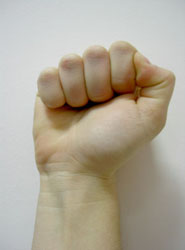
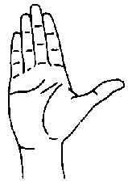
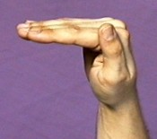
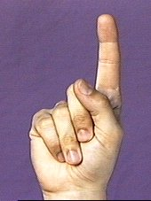
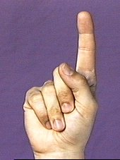
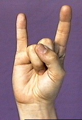
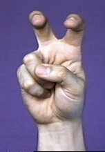

Glossing system used for Jewish services
David Bar-Tzur
Key to abbreviations and symbols (Cokely-Baker2 & Bar-Tzur)
- "all"
- sign is swept to the right, as if performing the action for everyone (on everything) at the same time
- alt.
- alternating, that is executed by DH, then NDH, then DH
- antisymmetrically
- hands behave like the opposite of a mirror image (as in GO)
- [As]3
- the A handshape but the thumb is tucked against the index finger
- away
- away from signer, as in PO away
- backhand
- not the palm, but the other side of the hand
- [B]3
- the B handshape but the thumb is not tucked into the palm, as in SCHOOL
- [B^]1
- the handshape is modified so that fingers are held at 90º angle to palm, as in EQUAL as illustrated with one hand in this entry
- [Bb^] or [B||]
- is the handshape for MEETING when it is halfway closed
- [Bb]1

- the B handshape with the thumb tucked into the palm as in TROUBLE or WORRY
- bC
- the C handshape with only the thumb and index fingers extended and curled
- [bO]3

- the O handshape with only the thumb and index fingers extended and curled, called "baby O", as in EXACT
- brr
- lips are vibrated as a cold person may when she says "Brr!"
- bX
- thumb is placed over the middle joint of [X] as in some variants of CONTROL
- circle in
- The circular direction that is opposite to “circle out” (which see). Clockwise and counterclockwise depend on how you look at the hand and are vague terms.
- circle out
- The circular direction that the fingers curl in (for whichever hand is moving), if the thumb points straight out like an extension of the arm. Clockwise and counterclockwise depend on how you look at the hand and are vague terms.
- ctr
- center
- DFT
- fingertips of dominant hand
- DH
- dominant hand
- DS
- dominant side
- "each"
- sign is repeated while moving to the right
- flick index finger1
![initial position of [flick index finger] handshape illustrated](../handshape/cockedindexfinger.jpg) 
 - The second picture has the PO wrong, but you get the idea; as in UNDERSTAND
- FO
- fingertip orientation (if fingers were extended)
- FT
- fingertips
- [horns]1
- handshape where the index and pinky fingers are extended, as in MOCK
- ITALICS
- sign this with NDH
- lf
- left
- ME, YOU, S/HE, (2h)YOU, THEY
- any underlined pronoun uses the honorific index, that is, [B], PO up, FO > the thing to be honored, and sweeps down a little for the singular form and across for the plural.
- NDFT
- fingertips of non-dominant hand
- NDH
- non-dominant hand
- NDS
- non-dominant side
- open 8
- the handshape for the sign FEEL
- "over time"
- sign is repeated with circular motion to show action happens over a long time period, at least psychologically
- PO
- palm orientation
- pronate
- hand is twisted so that PO is down or away from the signer
- (role play)
- turn body slightly to show that the signer is taking on the role of a person in the story and quoting her/him directly
- rt
- right
- 'S
- possesive, that is the [B], PO towards whatever is being
referenced
- "step by step"
- sign is executed slowy in several small steps
- supinate
- hands is twisted so that PO is up or towards the signer
- symmetrically
- hands behave as in a mirror image (as in the sign SEPARATE)
- VERB-TO-me, us
- The sign whic normally moves away from the signer, moves towards the signer to show the action is happening to "me" or "us"; an example being HAVE-MERCY-ON-us, which as the sign usually glossed PITY, moves towards the signer and not away
- "th"
- the tongue sticks out slightly while the mouth forms the phoneme "th", showing carelessness or inattentiveness to detail or rightness
- [V:]1
- the colon means curl the fingertips of the handshape, as in BLIND
- wg
- wiggle fingers
- [X]
- a letter or number inside brackets indicates handshape
- [X dot]
- handshape is modified by extending thumb
- [X^]
- the handshape is modified so that fingers are held at 90º angle to palm, as in B^-CL
- X,Y
- first handshape is for NDH, second is for DH, as in "leak from hole": F,4-CL
- X>Y
- first handshape becomes second handshape as in "disappear into the distance": G>bO-CL
- (1h)
- one hand is used instead of the usual two-handed sign
- 1x, 2x, 3x
- once, twice, three times (sometimes notated x1, x2, x3); used instead of + when sign is usually produced twice, but now once (or vice versa), or in descriptions that do not use the gloss, so there is no sign to add + to
- (2h)
- both hands have the same handshape or the usual one-handed sign is produced with both hands
- [5:]1

- the colon means curl the fingertips of the handshape
- [5^]3

- the carot (^) means bend the fingers at the knuckles, but keep them straight as in the final position of
SUNSHINE
- @
- at, as in "brain surgery": PERFORM-SURGERY@temple
- :
- The fingertips are curles as in [5:] for ANGRY
- #
- lexicalized fingerspelling (previously called fingerspelled loan sign)
- *
- sign is executed with a single, short, forceful movement
- >
- towards, as in > DS; without further explanation
- ><
- face each other, as in POs ><
- ^
- the handshape is modified so that fingers are held at 90º angle to palm, as in B^-CL
- +
- it combines sign descriptions with sign glosses to avoid confusstion as in "missionary": [M], FO > DS, circles heart + AGENT.
- +-
- sign is repeated while moving in direction indicated: as in +-> DS, +-up, +-down, +-away, +-towards
- ~
- The two signs are blended together smoothly
- (<) GLOSS1, (>) GLOSS2
- sway body to NDS and sign GLOSS1, then sway body to DS and sign GLOSS2
Glossing techniques (Cokely-Baker)
- Vocabulary items are listed with the English term uncapitalized, a colon, and the gloss in bolded upper case letters.
- Initialized signs are indicated by the substituted handshape, a dash, and the base sign. Again this assumes that the gloss for the base sign is known to the target audience.
- Fingerspelled vocabulary is treated the same as vocabulary that has a sign and is indicated by bolded upper case letters separated by dashes. A single fingerspelled letter is enclosed in quotes.
- More context for the vocabulary item is provided by additional words in parentheses.
- Signs that are generated by repetition of base signs, are indicated with a plus sign.
- Signs that are blends of other signs can be represented by a tilda (~).
- If a sign uses parts of the body as a direct object, the sign is followed by a dash and the body part described in lower case letters.
- If spatialization and directionality are used, lf, rt, ctr can be used for "left", "right", and "center".
More detailed description (Cokely-Baker, Bar-Tzur)
For signs that can not be related to signs that have a standard gloss, a more complex system is used.
- If the sign is two-handed and the handshapes are the same, (2h) is used and then the handshape is enclosed in square brackets.
- If two-handed, but the handshapes are different, DH (dominant hand) is used, indicating the handshape, later listing NDH (non-dominant hand). NDH may be omitted since the other handshape must now be on the NDH.
- Palm orientations are specified: PO up, PO down, PO > NDS (non- dominant), PO > DS (dominant), PO towards (towards signer), PO away (away from signer), POs >< (palms face each other).
- FO specifies fingertip orientation, similarly to PO. Remember FO is defined in linguistics as the direction the fingertips would point if they were extended, not based on a closed HS.
- If handshapes are used as classifiers, information showing how the classifier moves is described in single quotes.
- If the NDH stays in place from a previous sign while the DH continues a new sign, a dashed arrow can show the duration of the hold.
Footnotes
1. ASL University: Handshapes
2. As described in Baker-Shenk, C. & D. Cokely (1991). American Sign Language: A teacher's resource text on grammar and culture. Clerc. ISBN 093032384X.
3. Türk İşaret Dili.

Home